Dify RAG 单个云实例部署文档 -- AMD CPU
Dify简介
Dify 是一款开源的 大型语言模型（LLM）应用开发平台，旨在帮助用户快速构建、部署和管理基于 AI 的应用程序。它的核心特点包括 低代码/可视化开发，用户可以通过拖拽组件的方式设计 AI 工作流，无需深入编码即可创建聊天机器人、文本生成工具或复杂自动化任务。Dify 支持 多模型集成，兼容 OpenAI、Anthropic等主流 LLM，并能快速接入新模型，提供灵活的选择。此外，Dify 内置 RAG（检索增强生成）引擎，可结合外部知识库提升 AI 回答的准确性，适用于企业知识管理、智能客服等场景。
Dify 的 优点 在于其 易用性和高效性，即使是 非技术人员 也能快速上手，同时提供企业级功能如 权限管理、日志监控和 API 集成，适合创业团队、企业及个人开发者。它的 开源特性 允许私有化部署，确保数据安全，并支持灵活的定制化需求。
主要用途 包括：
- 智能客服：构建多轮对话机器人，提升服务效率。
- 内容生成：自动撰写文章、翻译或营销文案。
- 企业知识库：通过 RAG 技术实现精准问答。
- 自动化流程：如数据分析、邮件处理等复杂任务编排。
Dify 通过 一站式解决方案，大幅降低了 AI 应用的开发门槛，加速从创意到落地的进程。
RAG简介
检索增强生成（RAG, Retrieval-Augmented Generation） 是一种结合信息检索与大型语言模型（LLM）生成能力的技术，旨在解决传统大模型在专业知识、时效性和数据安全等方面的局限性。由于大模型的训练数据通常存在知识局限性（如无法覆盖专业领域或实时信息）和幻觉问题（可能生成不准确的回答），RAG通过引入外部知识库，使模型能够动态检索相关数据并生成更准确、可靠的回答。
RAG的核心流程 可分为三个阶段：
1. 数据准备：将外部知识（如企业文档、数据库）进行文本分割、向量化（Embedding）并存储至向量数据库（如FAISS、Milvus）。
2. 检索阶段：用户提问时，系统将问题转化为向量，从数据库中检索最相关的文本片段。
3. 生成阶段：检索到的内容与用户问题结合，通过Prompt工程输入LLM，生成最终答案。
RAG的实际应用 广泛覆盖多个领域：
- 智能客服：结合企业知识库提供精准回答，如法律咨询或产品支持。
- 医疗与金融：辅助医生检索最新研究，或帮助分析师整合市场数据生成报告。
- 内容创作：自动生成基于权威数据的文章或新闻摘要。
RAG通过动态结合外部知识，显著提升了AI的可信度与实用性，成为企业部署生成式AI的重要方案。
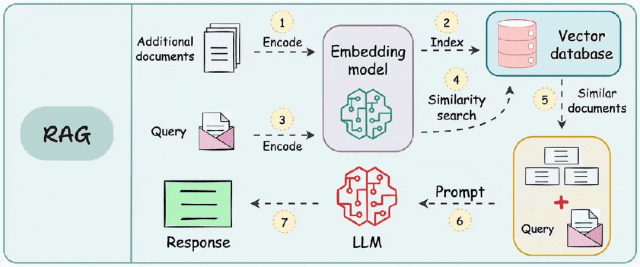
计费说明
该服务在阿里云上的费用主要涉及：
- 所选CPU云服务器的规格
- 磁盘容量
- 公网带宽 计费方式：按量付费（小时）或包年包月 预估费用在创建实例时可实时看到。
RAM账号所需权限
| 权限策略名称 | 备注 |
|---|---|
| AliyunECSFullAccess | 管理云服务器服务（ECS）的权限 |
| AliyunVPCFullAccess | 管理专有网络（VPC）的权限 |
| AliyunROSFullAccess | 管理资源编排服务（ROS）的权限 |
| AliyunComputeNestUserFullAccess | 管理计算巢服务（ComputeNest）的用户侧权限 |
部署流程
- 单击部署链接。根据界面提示实例选择并填写参数，可以看到对应询价明细，确认参数后点击下一步：确认订单。 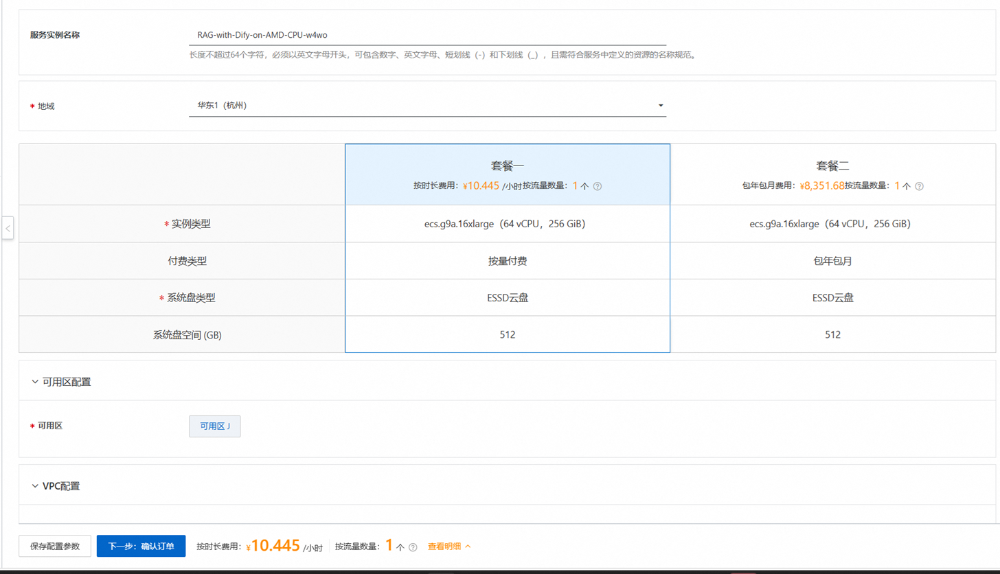
- 创建VPC,填写用户名/密码，选择系统盘，确认订单完成后同意服务协议并点击立即创建。 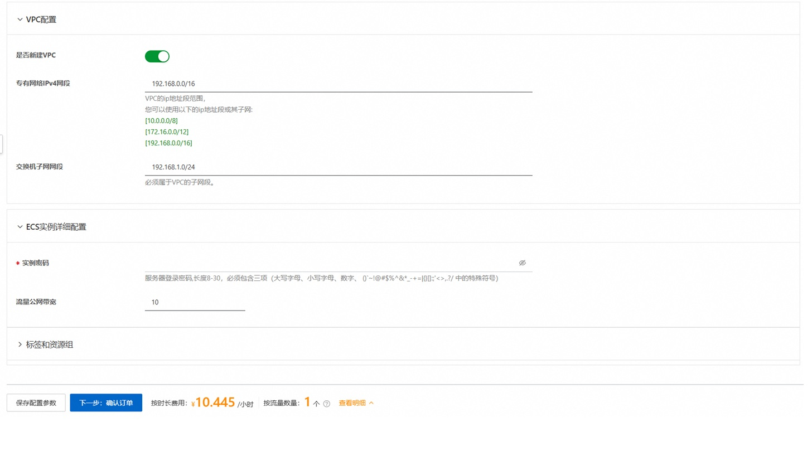
- 等待部署完成后就可以开始使用服务，进入服务实例详情页，在资源栏中远程连接ECS 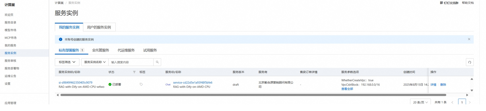 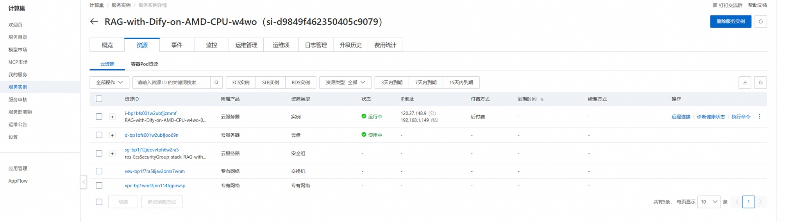
- 启动服务
该部署流程已经预先设置了运行Dify的配置文件，下载了预设的LLM模型，并且提供了本地运行LLM的配置文件。普通用户只需一行命令即可启动所有服务。在终端中，进入
workspace/dify/docker目录，运行以下命令。
./start.sh
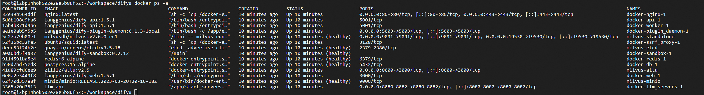 请确认上面的服务启动正常。
高级用户可以选择使用自己想要的LLM模型。LLM模型通过llama.cpp运行。用户需要下载模型的GGUF文件到workspace/models目录，然后修改workspace/dify/docker/llm_api/env_setup.sh文件中的模型名字，最后运行启动命令。
如果需要停止所有的dockers容器，在workspace/dify/docker目录下运行以下命令。
docker compose down
访问 Dify 网页界面
启动服务后，通过公网地址使用Dify， http://your-host-IP 该部署已经预设了管理员用户和密码。使用 demo@gmail.com 登录，密码是 "demo1234!"
在 Dify 中搭建 RAG 的分步说明
该部署已经设置了Dify使用的Qwen3-30B-A3B模型作为缺省大模型、创建了用于演示的知识库和聊天流程。用户登录后即可开始对话。
Qwen3-30B-A3B是Qwen 系列大型语言模型的最新成员之一。小型 MoE 模型 Qwen3-30B-A3B 的激活参数数量是 QwQ-32B 的 10%，准确性更胜一筹,推理速度更快。 详细的Qwen3模型介绍可以参考Qwen3 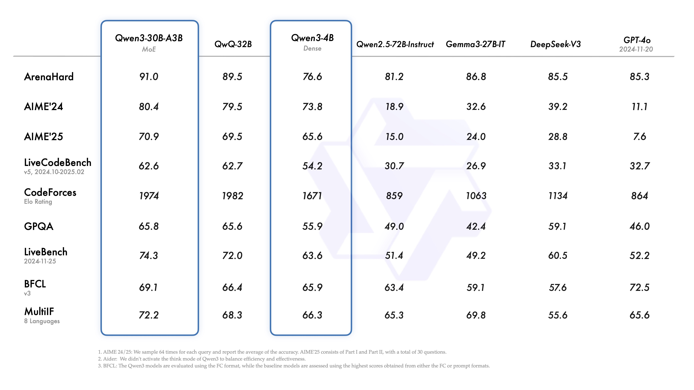
Qwen3 模型支持两种思考模式： * 思考模式：在这种模式下，模型会逐步推理，经过深思熟虑后给出最终答案。这种方法非常适合需要深入思考的复杂问题。 * 非思考模式：在此模式中，模型提供快速、近乎即时的响应，适用于那些对速度要求高于深度的简单问题。
如果用户需要重新设置账户以及创建自己的知识库，请按照以下步骤操作。
设置模型
进入 "Settings -> Model Provider" 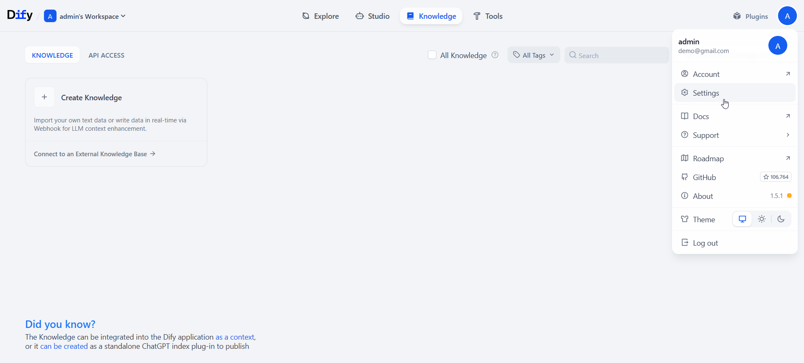 安装 OpenAI-API-compatible 插件 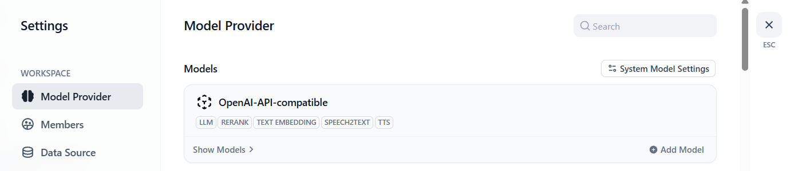
安装插件后，点击 "Add model" 对于 LLM，输入模型名称和 API URL。我们从端口 8080 提供模型服务。 API URL 是 http://host.docker.internal:8080/v1 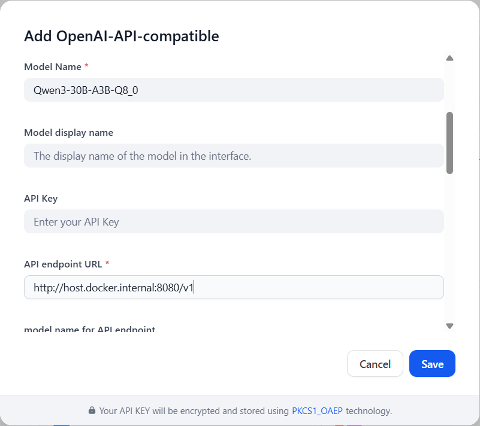 同样，设置嵌入和重排序模型。 对于嵌入模型，API URL 是 http://host.docker.internal:8081/v1 对于重排序模型，API URL 是 http://host.docker.internal:8082/v1
设置这些模型后，还要完成系统模型设置，并保存设置。 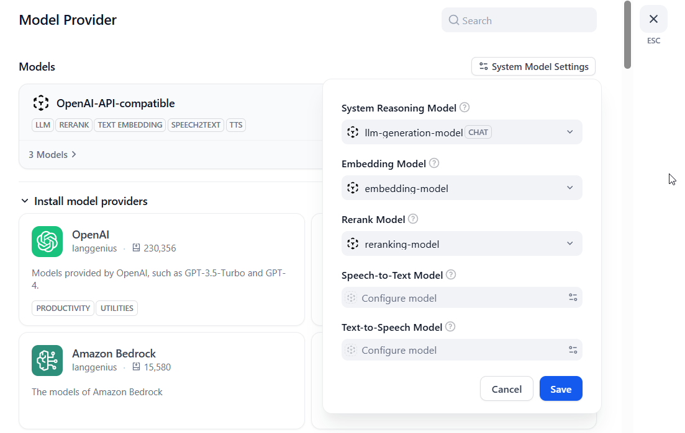
创建知识库
点击 "Knowledge -> Create Knowledge -> upload file -> Next"，然后选择分块方法、嵌入模型和检索设置。
下面只是提供一个例子。这些参数需要根据用户自己的文档进行优化。 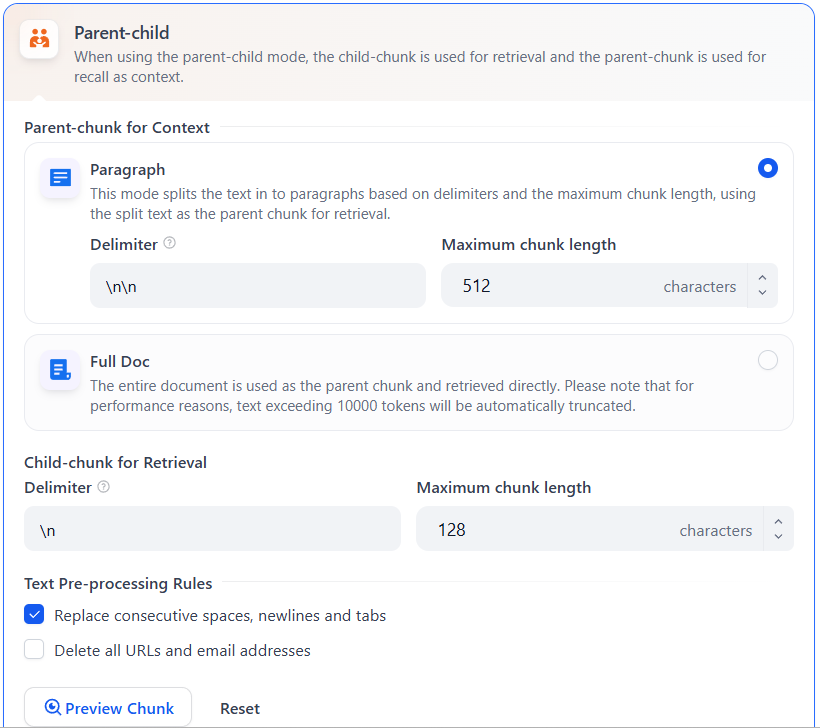 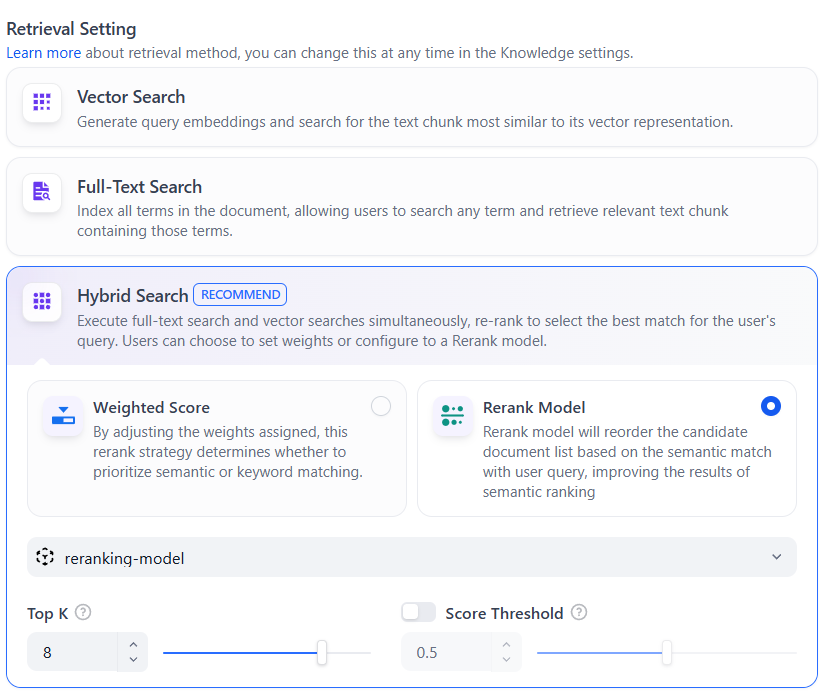 在该部署流程中，我们使用 Milvus 作为向量数据库。这里推荐使用混合搜索。
创建聊天工具
点击 "Studio -> Chatflow -> create from blank"，给你的应用一个名称，然后点击 "create" 这就是一个简单的 RAG聊天机器人。 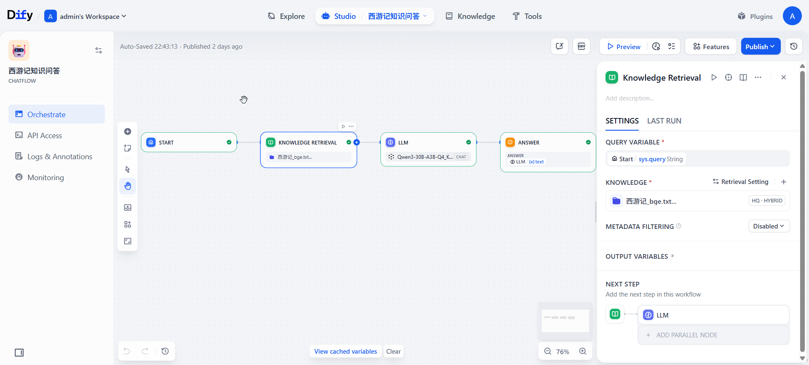
监控工具
LLM 日志
llama.cpp 运行日志位于 volumes/llm_logs 文件夹中。生成模型、嵌入模型和重排序模型分别生成自己的日志。性能指标可以在日志文件中查看。
Milvus 网页界面
这里的RAG使用Milvus 向量数据库。我们提供了一个网页界面工具来检查 milvus 向量数据库。URL 是 http://your-host-ip:8000。 确保在VM 实例中开放此端口。用户名是 "root"，密码是 "Milvus"。